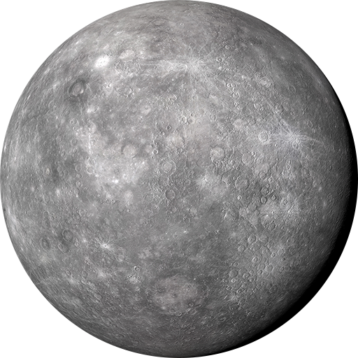

Sunčev sistem čine Sunce i nebeska tela koja kruže oko njega: planete i njihovi sateliti, asteroidi, komete, meteoridi, kao i međuplanetarna prašina i gas. Ponekad se Sunčevim sistemom naziva i deo prostora u kojem preovladava Sunčevo gravitaciono polje. Sunčev sistem nastao je pre otprilike 4,6 milijardi godina od rotirajućeg usijanog oblaka gasa i prašine. Koncentracijom tih elemenata prvo je nastalo Sunce, a zatim i ostali članovi njegovog sistema. Od celokupne mase sistema, masa Sunca inosi 99,86%, a svega 0,14% čini masa njegovih pratilaca. Sva nebeska tela sastavljena su od poznatih hemijskih elemenata, ali količina pojedinih elemenata varira od tela do tela.
Sunce je nama najbliža i najbolje proučena od svih zvezda. Oko njega kruži 8 planeta i njihovi sateliti, 5 patuljastih planeta, asteroidi, komete, meteori i čestice kosmičke prašine, tako da Sunce predstavlja središnju zvezdu Sunčevog sistema. Energija Sunca u vidu sunčeve svetlosti i toplote omogućava život na Zemlji putem procesa fotosinteze i utiče na klimu i vreme na Zemlji. Srednja udaljenost između Sunca i Zemlje je 149 600 000 km ili jedna astronomska jedinica, što svetlost pređe za 8 minuta i 19 sekundi.

Zemlja je treća planeta po udaljenosti od Sunca i jedina poznata planeta u svemiru na kojoj postoji život. Prema radiometrijskom računanju i mišljenju da je ceo Sunčev sistem nastao u jednom procesu, procenjuje se da se Zemlja formirala pre više od 4,5 milijardi godina, što je utvrđeno određivanjem vremena poluraspada urana i torijuma. Gravitacija Zemlje međusobno deluje sa drugim objektima u svemiru, posebno sa Suncem i Mesecom, jedinim prirodnim satelitom Zemlje, koji je počeo da kruži oko Zemlje pre 4,53 milijardi godina.

Mesec (lat. Luna) je Zemljin prirodni satelit i ujedno najbliže nebesko telo, udaljeno u proseku 384 401 km, tako da svetlost s Meseca na Zemlju stiže za 1,25 sekundi. Mesec obilazi Zemlju po eliptičnoj stazi srednjom brzinom od 1,02 km/s. Mesec je čvrsto nebesko telo prečnika 3 647 km, te je po površini 14 puta, po obimu 50 puta, a po masi 81 puta manje od Zemlje. Ubrzanje sile teže je na Mesecu 6 puta manje nego na Zemlji. Mesec obiđe oko Zemlje za 27 dana 7 sati 43 minuta i 11.6 sekundi. Mesec nema tekuću vodu ni značajnu atmosferu. Ima znatno slabiju gravitaciju od Zemljine, nema svoje magnetno polje, ima izrazite varijacije temperature u kratkom vremenskom intervalu i izložen je direktnim uticajima kosmosa.

| Zemlja | Zemlja je najveća terestrička planeta. Terestrička je planeta upravo zbog svoje čvrste stenovite površine, ali interesantno je da je njena unutrašnja struktura složena i dinamična. Podzemni procesi, poput tektonike ploča i vulkanizma, neprestano oblikuju planetu, čineći je dinamičnom i evoluirajućom sredinom. |  |
| Merkur | Merkur je najmanja i najbliža planeta Suncu, s ekstremnim temperaturama koje variraju od ekstremnih vrućina tokom dana do ekstremnih hladnoća noću. Ova planeta ima sporu rotaciju, što rezultira dugim danima i noćima. |  |
| Venera | Venera je druga planeta od Sunca, ističe se kao slična po veličini Zemlji, ali ima ekstremnu atmosferu bogatu ugljen-dioksidom s efektom staklene bašte. Sa visokim temperaturama do 467 °C, Venera ima najduži dan u Sunčevom sistemu zbog retrogradne rotacije, kada jedan dan traje duže od jedne godine. | |
| Mars | Mars je četvrta planeta od Sunca, ističe se crvenom bojom zbog prisustva gvožđe III oksida na površini. Poznat po velikim vulkanima, uključujući i najviši, Olympus Mons, i velikim kanjonima, poput Valles Marineris. Mars ima tanju atmosferu bogatu ugljen-dioksidom, s hladnim temperaturama i seizmičkom aktivnošću. |  |
| Jupiter | Jupiter je peta i najveća planeta u Sunčevom sistemu, prepoznatljiv je po masivnoj veličini i izraženoj prugastoj atmosferi koja sadrži oblakne pojaseve. Poseduje najveći broj satelita u Sunčevom sistemu, uključujući i četiri velika Jupiterova meseca - Galilejeva meseca: Io, Europa, Ganimed i Kalisto. |  |
| Saturn | Saturn je šesta planeta od Sunca, prepoznatljiv je po spektakularnim prstenovima koji se sastoje od leda i stena. Ima sličan sastav kao Jupiter, sa atmosferom bogatom vodonikom i helijumom. Saturn ima brojne satelite, uključujući Titan, koji je drugi po veličini prirodni satelit u Sunčevom sistemu. |  |
| Uran | Uran, sedma planeta od Sunca, ističe se po svojoj karakterističnoj svetlo plavoj boji. Poznat je po tome što rotira "na boku", a njegovi prstenovi su manje uočljivi u poređenju sa Saturnovim. Uran ima hladnu atmosferu bogatu vodonikom, helijumom i metanom. |  |
| Neptun | Neptun je osma i poslednja "prava" planeta u Sunčevom sistemu, poznata je po intenzivno plavoj boji atmosfere uzrokovanom metanom. Ima snažne vetrove, uključujući i najjače u Sunčevom sistemu. Neptun poseduje karakterističan sistem prstenova i najveći poznati orbitirajući mesec, Triton, koji je retrogradan. |